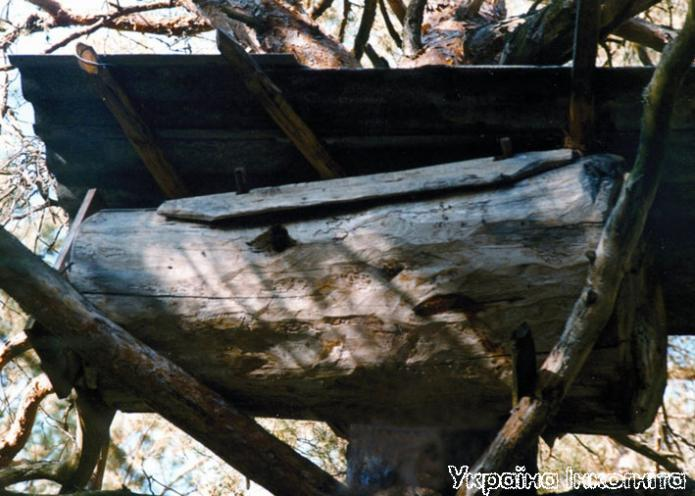
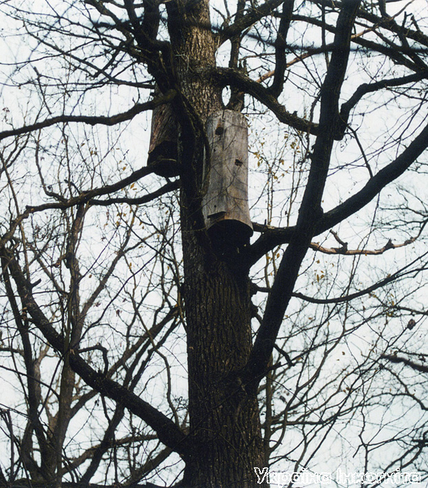

Поліське бортництво

"Бортництво або бортьове бджільництво (старий спосіб провадження бджільництва, коли бджоли утримуються у дуплах або довбаних колодах, прикріплених до дерев) було однією з найважливіших галузей господарства Київської Русі. У Поліссі бортництво відігравало важливу господарську роль до початку ХХ століття, але із широким впровадженням рамочного вулика воно втратило своє значення і практично зникло". Так стверджує енциклопедичний словник УРСР. Але це один з небагатьох випадків, коли словник помиляється - в деяких районах Полісся бортництво існує і нині.

Сучасні бортники значно частіше використовують борті-лежаки. Чіпляють їх на розлогих старих деревах, що ростуть найчастіше на узліссях або поряд з лісовими галявинами. Для захисту від дощу та снігу лежаки вкривають листами шиферу, рубероїдом, березовою корою або просто дошками.
В Поліському заповіднику та на територіях, що межують з ним, на старих розлогих деревах, переважно дубах і соснах, що ростуть на узліссях та поряд з лісовими галявинами закріплено величезну кількість бортей. Їх там навіть не сотні, а тисячі. Це один із останніх регіонів значного поширення бортьового бджільництва в Україні.
Довгий час бортництво було тут у занепаді, його вважали неприбутковою справою, яка давно віджила свій вік. Але нове дихання воно отримало у 90 роках ХХ століття. Значна частина місцевого населення, яка потрапила у "лещата" економічної кризи, повернулася до майже забутого способу отримання такого важливого й дорогого продукту як мед. Поряд з покинутими і занедбаними бортями, почали з'являтися нові.
Бортництво - промисел, що існує на Поліссі ще з часів Київської Русі. Це одне з небагатьох ремесел, на яких вплив століть прогресу практично не позначився. Полягає він в утримуванні у видовбаних колодах диких роїв бджіл і отримання від цих комах дуже смачного, поживного і корисного меду, який називають лісовим.

Борті-стояки зараз користуються меншою популярністю ніж раніше. Бортники кажуть, що в них часто обривається вощина, і що бджоли краще заселяють борті-лежаки. У межах Сирницької Луки на вікових дубах висить дуже багато старих стояків,які вже не доглядаються.
Борть в околицях заповідника називають "улієм". Це велика дерев'яна колода з видовбаною приблизно на дві третини довжини серединою (діаметр внутрішньої порожнини становить близько 15-20 см). Вона має два зовнішніх отвори: один круглий, невеликий, що слугує входом-виходом для бджіл, інший прямокутний великий (0,5 м) - крізь нього видовбується середина борті, він же виконує основну господарську функцію - крізь нього забирають мед, підгодовують, за потреби, бджіл тощо. Середня довжина борті 150 см, діаметр - 70 см, маса може перевищувати 100 кг. Перед тим як закріпити на дереві, готову борть утеплюють, зачиняють господарський отвір, обробляють кількома спеціальними розчинами, щоб запобігти руйнуванню деревини, відігнати шкідників та приманити бджіл. За допомогою своєрідного підйомника (колесо на осі) борть піднімають на висоту 10-20 метрів і закріплюють. Раніше вулики кріпили на більшій висоті, ніж нині (15-25 м) для того, щоб ведмедям та іншим ласим до медку істотам (людям в тому числі) тяжче було до нього добратись. Для захисту від ведмедів ставили палі, самостріли та інші пристрої. Дуже ефективним засобом була прив'язана поряд з вуликом колода. Ведмідь, що ліз на дерево до борті, натикався на колоду і намагався відштовхнути її лапою. Все це закінчувалося тим що розгніваний клишоногий відпускав стовбур дерева, щоб вхопити колоду двома лапами і падав донизу, на застромлені під деревом палі. За крадіжки меду бортники жорстоко карали. Подейкують, що "застуканих на гарячому" злодіїв примушували стрибати з дерева додолу. Дуже часто злодюги калічились, стрибаючи з дерева, або взагалі гинули.


Бортники піднімаються до вуликів, використовуючи замість драбини довгий і сучкуватий стовбур сосни, який має назву острога або острог (його господар ховає десь неподалік). Для того щоб утримувати і доглядати кілька десятків бортей (їх може бути до півсотні) потрібно мати неабияку фізичну силу. Саме тому бортництвом успішно можуть займатися лише спритні і сильні чоловіки.
Бортник не має ніякої гарантії, що в тому чи іншому вулику поселиться рій. Деякі борті бджоли обминають на превеликий сум хазяїна, який згаяв не один тиждень, щоб ту борть виготовити і поставити. Основний взяток меду у поліських лісах бджоли беруть з крушини та вересу. Ці рослини мають невеликі квіточки, і тому пилок в дощові роки швидко вимивається. В такі роки бджоли збирають дуже мало меду і навіть можуть загинути від голоду, якщо господар не буде підгодовувати своїх бджіл цукром або цукровим сиропом. Але за нормального взятку одна борть приносить в середньому 10-20 кг меду в рік, а в гарні роки навіть більше.
В 2002 році в Житомирському Поліссі палахкотіли страшні пожежі. Із зони лиха бджоли рятувались в інші, менш небезпечні місцевості, однією з яких стали ліси навколо Селезівки. Значна кількість прибулих диких роїв додатково стимулювала розвиток бортництва в межах заповідника, тому в 2003 році бортів тут стало ще більше.
Текст та фото Романа Маленкова